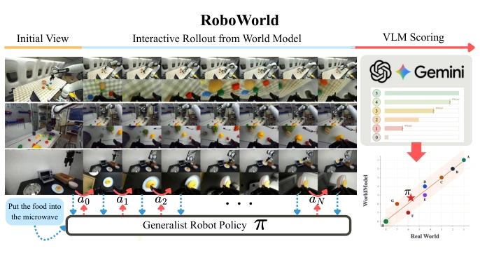
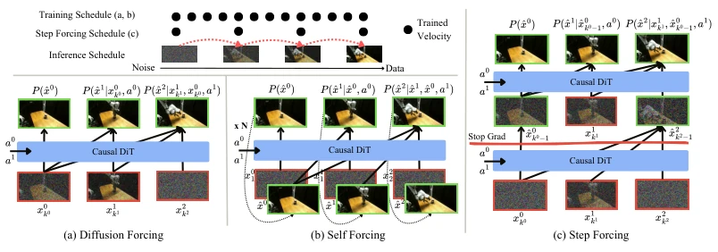
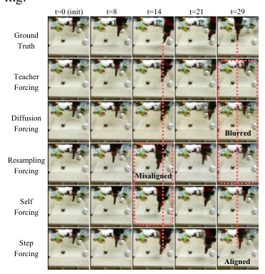
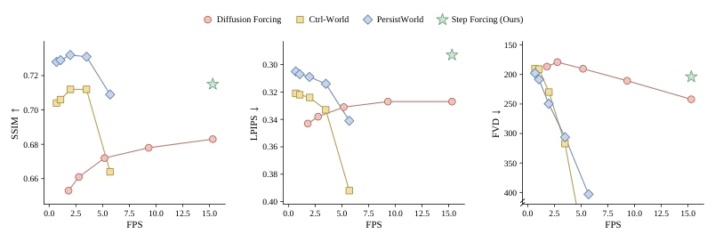
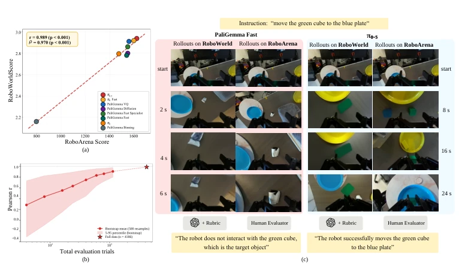
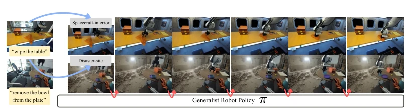
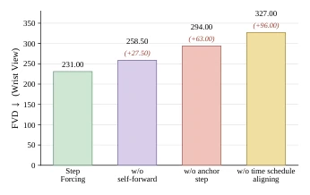
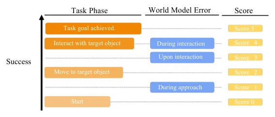
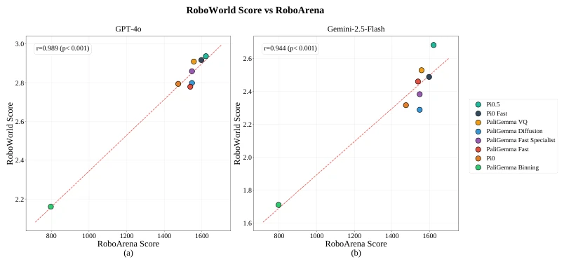
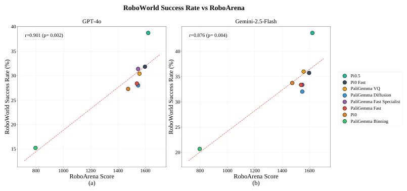

This paper attempts to replace expensive real-world robot evaluation with a video world model, resulting in a Pearson correlation coefficient as high as 0.989, which is simply more stable than my hairline. The core of ROBOWORLD lies in "fast" and "accurate"; it solves the cumulative error of long-horizon generation through STEP FORCING, combined with VLM scoring, indeed saving a lot of trouble from real machine debugging. But do not get too excited, this thing essentially still relies on the hallucination capability of VLM; if the VLM misjudges, the evaluation results will still fail. Moreover, it is mainly trained on the DROID dataset, and generalizing to unseen physical interactions (such as soft bodies) may still rely on guessing. However, being able to run long-horizon generation at 15 FPS, this efficiency is indeed worth praising, counting as opening a new path for Sim-to-Real transfer.
Evaluation of general-purpose robot policies (VLA) is currently a major pitfall. Real-world evaluation is limited by hardware, safety, and manpower, with extremely high costs [42]. Although traditional simulators can run, they involve heavy engineering and suffer from a Sim-to-Real Gap, leading to unreliable evaluation results [19, 20]. Although video world models provide a scalable alternative, long-horizon generation is prone to accumulating errors, and inference speed is slow [39, 40]. Existing VLM-based scoring methods are often binary, easily confusing policy failure with model artifacts. Therefore, there is an urgent need for an automated evaluation pipeline that is both fast and faithfully reflects real-world performance.

Figure 1: Overview of ROBOWORLD. ROBOWORLD evaluates robot policies via closed-loop rollouts in a video world model scored by a task-progress-aware VLM judge, yielding rankings that strongly correlate with real-world evaluations.
ROBOWORLD consists of two parts: an autoregressive video world model trained based on STEP FORCING, and a task-progress-aware VLM judge. STEP FORCING is the core innovation; it solves the context mismatch between training and inference by combining "one-step autoregressive prior" and "anchored steps". During training, the model denoises from self-generated noise priors, while using real data as anchors with a certain probability to maintain action controllability. During inference, the same denoising schedule is used to achieve high-quality generation in few steps (e.g., 4 steps). During the evaluation phase, the VLM judge does not use simple success/failure binary scoring, but adopts a 0-5 point Rubric to distinguish task progress and model artifacts (such as anomalies in wrist view), thereby evaluating policy capabilities more fairly. Specifically, the model is built based on Rectified Flow, utilizing Stop Gradient to prevent the optimizer from overfitting its own generation, ensuring action-observation dynamics consistency. Additionally, KV cache and sliding window context are adopted during inference to further accelerate the autoregressive decoding process.

Figure 2: Left Upper: STEP FORCING shares the noise schedule between training and inference. (a) Diffusion Forcing conditions on noisy ground-truth (red). (b) Self Forcing conditions on self- generated context (green) via repeated forward rollouts. (c) STEP FORCING conditions on the one- step self-forwarded prior (green) or anchor step (red).

Figure 3: STEP FORCING shows strong ac- tion controllability while maintaining visual quality throughout the whole horizon.
The model is trained on the DROID dataset and tested on RoboArena. Baselines such as Diffusion Forcing and Ctrl-World were compared. Results show that STEP FORCING achieved the best LPIPS at 15.3 FPS, and the Pearson correlation coefficient with the real-world leaderboard reached 0.989, Spearman reached 0.970. Ablation studies indicate that the autoregressive prior and anchored steps are crucial for reducing wrist-view drift. Additionally, this method can maintain high correlation in extreme environments (such as spacecraft), proving its generalization potential. The entire evaluation process requires only 100 H100 GPU hours, significantly reducing the cost of large-scale policy evaluation.

Figure 4: Long-horizon action-conditioned video generation on RoboArena. Quality (SSIM, LPIPS, FVD) vs. FPS. Baseline markers sweep denoising steps ∈{50, 32, 16, 8, 4}. STEP FORCING achieves the best LPIPS at the highest FPS (15.3), and matches the baselines that run substantially slower on SSIM and FVD.

Figure 5: (a) Pearson and Spearman correlations between ROBOWORLD and the RoboArena leader- board. (b) Pearson correlation under varying numbers of evaluation trials, showing that greater di- versity in environments and tasks improves the correlation. (c) ROBOWORLD closed-loop rollouts compared with RoboArena rollouts using the same policies and tasks, sharing only the initial view. Rollouts proceed from top to bottom: PaliGemma Fast fails in both settings by selecting the wrong object, whereas π0.5 succeeds in both.

Figure 7: Qualitative examples of ROBOWORLD in synthetic extreme environments. We transform real-world robot images into extreme environment scenes (e.g., spacecraft interiors, disaster sites), and conduct closed-loop policy evaluation.

Figure 6: Component ablation of STEP FORCING on DROID.
其他图片Other Figures

Figure 8: Design principles of the evaluation rubric. We design the rubric such that scores primar- ily reflect task progress. In addition, we assign different penalties depending on when world-model errors occur, so failures that arise earlier in the rollout receive lower scores than those that happen after substantial task progress.

Figure 9: Pearson correlation between RoboArena score and RoboWorld Score under two different VLM judges: GPT-4o (a) and Gemini-2.5-Flash (b). Both judges show a strong linear relationship with the RoboArena leaderboard.

Figure 10: Pearson correlation between RoboArena score and RoboWorld Success Rate under two different VLM judges: GPT-4o (a) and Gemini-2.5-Flash (b). The success-rate signal also tracks the RoboArena ranking consistently across judges.